Imagine organizing a party for a hundred guests who initially do not know each other [1]. Offer them wine and cheese and you will soon have dozens of chatting groups of two to three. Now mention to Mary, one of your guests, that the red wine in the unlabeled dark green bottles is a rare vintage, much better than the one with the fancy red label. If she shares this information only with her acquaintances, you know that your expensive wine is safe, because she only had time to meet a few others in the room. However, the guests will continue to mingle, creating subtle paths between individuals that may still be strangers to each other. For example, while John has not yet met Mary, they have both met Mike, so now there is an invisible path from John to Mary through Mike. As time goes on, the guests will be increasingly interwoven by such intangible links. With that the secret of the unlabeled bottle will be pass from Mary to Mike and from Mike to John, slowly escaping into a rapidly expanding group.
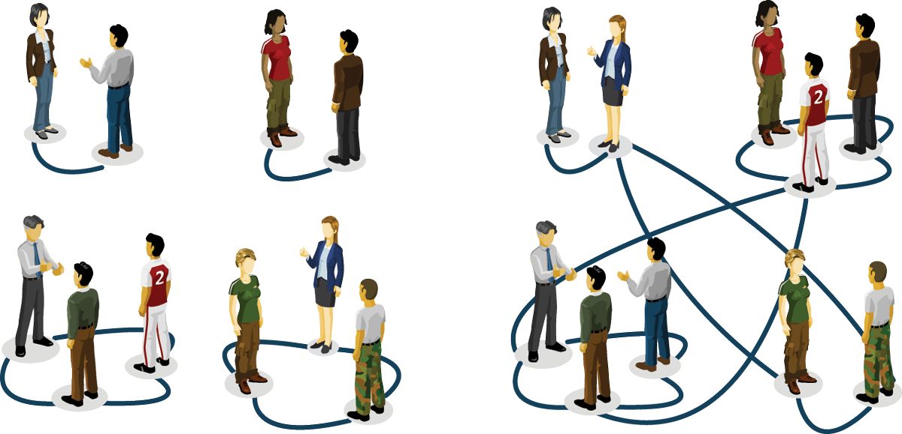
Image 3.1 From a cocktail party to random networks.
The emergence of an acquaintance network through random encounters at a cocktail party.
To be sure, when all guests had gotten to know each other, everyone would be pouring the superior wine. But if each encounter took only ten minutes, meeting all ninety-nine others would take about sixteen hours. Thus, you could reasonably hope that a few drops of the better wine would be left for you to enjoy once the party is over.
Yet, you will be wrong. The purpose of this chapter is to show you why. We will see that the party maps into a clas- sic model in network science called the random network model. And random network theory tells us that we do not have to wait until all individuals get to know each other for our expensive wine to be in danger. Rather, soon af- ter each person meets at least one other guest, an invisible network will form that will allow the information to reach most guests. Hence in no time everyone will be drinking the better wine.
3.2 THE RANDOM NETWORK MODEL
An important goal of network science is to build models that accurately reproduce the properties of real networks observed in real systems. Most networks we encounter in nature do not have the comforting regularity of a crystal lattice or the predictable radial architecture of a spider web. Rather, at first inspection most real networks look as if they were spun randomly. Random network theory embraces this apparent randomness by constructing networks that are truly random.
From a modeling perspective a network is a relatively simple object, consisting of only nodes and links. The real challenge, however, is to place the links between the nodes in a way to reproduce the complexity and apparent randomness of real systems. In this context the philosophy behind a random network is simple: it assumes that this goal is best achieved by placing the links randomly between the nodes. With that we arrive to the definition of a random network:
“A random network consists of N labeled nodes where each node pair is connected with the same probability p.”
Box 3.1 Two definitions of random networks.
There are two equivalent ways of defining a random network:
G(N,L) model: N labeled nodes are connected with L randomly placed links. Erdős and Rényi (Erdős & Rényi, 1959) used this definition in their string of articles on random networks.
G(N,p) model: Each pair of N labeled nodes is connected with probability p, a model introduced by Gilbert (Gilbert, 1959).
Hence the G(N,p) model fixes the probability p that two nodes are connected and the G(N,L) model fixes the total number of links L. While in the G(N,L) model the average degree of a node is simply ‹k› = 2L / N, other network characteristics are easier to calculate in the G(N, p) model. Throughout this book we will explore the G(N,p) model, not only for the ease that it allows us to calculate key network characteristics, but also because its construction is closer to the way real systems develop. Indeed, in real networks the number of links is rarely fixed, but we can instead determine the probability that two nodes link to each other.
To construct a random network, denoted with G(N, p) (Box 3.1):
Start with N isolated nodes.
Select a node pair, and generate a random number between 0 and 1. If the random number exceeds p, connect the selected node pair with a link, otherwise leave them disconnected.
Repeat step (2) for each of the N(N-1)/2 node pairs.
The network obtained through this procedure is called a random graph or a random network. Two mathematicians, Pál Erdős and Alfréd Rényi, have played an important role in understanding the properties of random networks. In their honor a random network is often called the Erdős-Rényi network (Box 3.2).
Box 3.2 A brief history of random networks.
Anatol Rapoport (1911-2007), a Russian immigrant to the United States, was the first to explore the properties of a random network. Trained as a pianist, Rapoport’s interests turned to mathematics after realizing that a successful career as a concert pianist would require a wealthy patron. He became interested in mathematical biology at a time when mathematicians and biologists hardly spoke to each other. In a paper written with Ray Solomonoff in 1951 [28], Rapoport demonstrated that if we increase the average degree of a network, we will observe an abrupt transition from a collection of disconnected nodes to a state in which the graph contains a giant component. Despite its pioneering ideas, Rapoport’s paper remains relatively unknown.
The study of random networks reached prominence thanks to the fundamental work of Pál Erdős and Alfréd Rényi. In a sequence of eight papers published between 1959 and 1968 [8-15], they merged probability theory and combinatorics with graph theory, establishing random graph theory, a new branch of mathematics [5].
The random network model was independently introduced by Gilbert [18] the same year Erdős and Rényi published their first paper on the subject. Yet, the impact of Erdős and Rényi’s work is so overwhelming that they are rightly considered the fathers of random networks.
Image 3.2a
Pál Erdős (1913-1996)
Hungarian mathematician known for both his eccentricity and exceptional scientific output, having published more papers than any other mathematician in the history of mathematics. His productivity had its roots in his fondness for collaboration: he co-authored papers with over five hundred mathematicians, inspiring the concept of Erdős number. His legendarily personality and profound professional impact has inspired two biographies [19, 27] and a documentary [7].
Image 3.2b
Alfréd Rényi (1921-1970)
Hungarian mathematician with fundamental contributions to combina- torics, graph theory, and number theory. His impact goes beyond mathe- matics: the Rényi entropy is widely used in chaos theory and the random network model he co-developed is at the heart of network science. He is remembered through the hotbed of Hungarian mathematics, the Alfréd Rényi Institute of Mathematics in Budapest. He once said, “A mathematician is a device for turning coffee into theorems”, a quote often attributed to Erdős.
3.3 THE NUMBER OF LINKS IS VARIABLE
Each random network we generate with the same parameters N, p will look slightly different (Image 3.3). Not only the detailed wiring diagram will vary between realizations, but so will the number of links L. It is useful, therefore, to determine how many links we expect for a particular realization of a random network with fixed N and p.
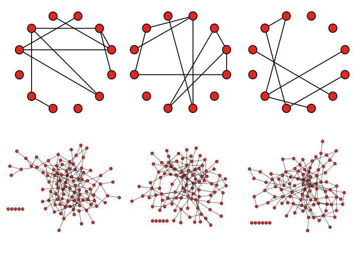
Image 3.3
Random networks are truly random.Top row: Three realizations of a random network generated with the same parameters N = 12 and p =1/6. Despite the identical parameters, the net- works not only look different, but they differ in the number of links they have (L = 8, 10, 7) and in the degree of the individual nodes. Bottom row: Three realizations of a random network with N = 100 and p = 1/6.
The probability that a random network has exactly L links is the product of three terms:
The probability that L of the attempts to connect the N(N-1)/2 pairs of nodes have resulted in a link, which is p L.
The probability that the remaining N(N-1)/2 - L attempts have not resulted in a link, which is (1-p)N(N-1)/2-L
A combinational factor, \[ \left( {\begin{array}{*{20}{c}}{\left( {\begin{array}{*{20}{c}}N\\2\end{array}} \right)}\\L\end{array}} \right) \] counting the number of different ways we can place L links among N(N-1)/2 node pairs.
Hence the probability that a particular realization of a random graph has exactly L links is
Hence ‹L› is the product of the probability p that two nodes are connected and the number of pairs we attempt to connect, which is Lmax = N(N - 1)/2 (Chapter 2).
Using Eq. (2) we obtain the average degree of a random network as
Hence ‹k› is the product of the probability p that two nodes are connected and (N-1), representing the maximum number of links a node can have in a network of size N.
In summary the number of links in a random network is not fixed, but varies between realizations. Its expected value is determined by N and p. If we increase p from p = 0 to p = 1 the random network becomes denser and the average number of links increase linearly from ‹L› = 0 to Lmax and the average degree of a node increases from ‹k› = 0 to ‹k› = N-1.
Box 3.3 Binomial distribution: Mean and variance.
If we toss a fair coin N times, tails and heads should occur with the same probability p = 1/2. The binomial distribution provides the probability px that we obtain exactly x heads in a sequence of N throws. In general, the binomial distribution describes the number of successes in N independent experiments with two possible outcomes, in which the probability of one outcome is p, and of the other is 1-p.
As Image 3.3 illustrates, in a given realization of a random network some nodes are lucky, gaining numerous links, while others have only a few or no links. These differences are captured by the degree distribution pk providing the probablity that a randomly chosen node has degree k.
In a random network the probability that node i has exactly k links is the product of three terms [5]:
The probability that k of its links are present, or pk.
The probability that the remaining (N-1-k) links are
missing, or (1-p)N-1-k.
The number of ways we can select k links from N - 1 potential links a node can have, or \[\left( \begin{array}{c}N - 1\\k\end{array} \right)\]
Hence the degree distribution of a random network follows the binomial distribution
The shape of this distribution depends on the system size N and the probability p (Image 3.4). Using the properties of the binomial distribution (Box 3.3), from the degree distribution (7) we can calculate the network’s average degree ‹k›, recovering Eq. (3). We can also determine the second moment ‹k2› and the variance σk of the degree distribution (Image 3.4), quantities that will play an important role later.
Most real networks are sparse, hence ‹k› « N (Table 3.1, Image 3.4b). In this limit the degree distribution (7) is well approximated by the Poisson distribution (Advanced Topics 3. A)
which is often called, together with (7), the degree distribution of a random network.
The binomial and the Poisson distribution describe the same quantity, hence they have several common properties (Image 3.4a):
Both distributions have a peak around ‹k›. If we keep N constant and increase p, the network becomes denser, increasing ‹k› and moving the peak to the right.
The width of the distribution (dispersion) is also controlled by p or ‹k›. The denser the network, the wider is the distribution, hence the larger are the differences in the degrees.
As we use the Poisson form in Eq. (8), we need to keep in mind that:
The exact result for the degree distribution is the binomial form in Eq. (7), thus Eq. (8) represents only an approximation to (7) valid in the k « N limit. For most networks of practical importance this condition is easily satisfied.
The advantage of the Poisson form is that key network characteristics, like ‹k›, ‹k2› and σk, have a much simpler form (Image 3.4a), depending on a single parameter, ‹k›.
The Poisson distribution in Eq. (8) does not explicitly depend on the number of nodes N . Therefore, Eq. (8) predicts that the degree distributions of networks of different sizes but the same average degree ‹k› are indistinguishable from each other (Image 3.4b).
Despite the fact that the Poisson distribution is only an approximation to the degree distribution of a random network, thanks to its analytical simplicity, it is the preferred form for pk. Hence throughout this book, unless noted otherwise, we will refer to the Poisson form in Eq. (8) as the degree distribution of a random network.
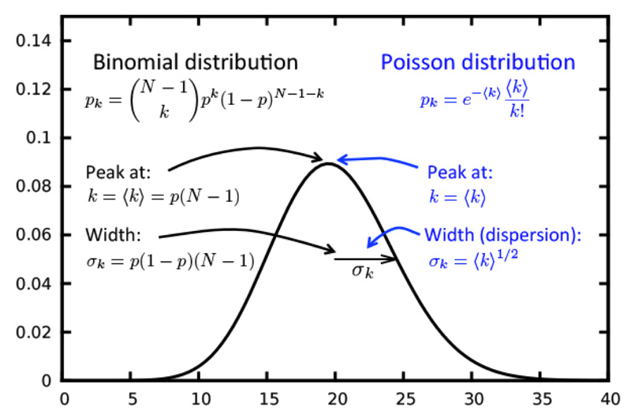
Image 3.4a
Anatomy of a binomial and a Poisson degree distribution.
The exact form of the degree distribution of a random network is the binomial distribution (left). For N » ‹k›, the binomial can be well approximated by a Poisson distribution (right). As both distributions describe the same quantity, they have the same properties, which are expressed in terms of different parameters: the binomial distribution uses p and N as its fundamental parameters, while the Poisson distribution has only one parameter, ‹k›.
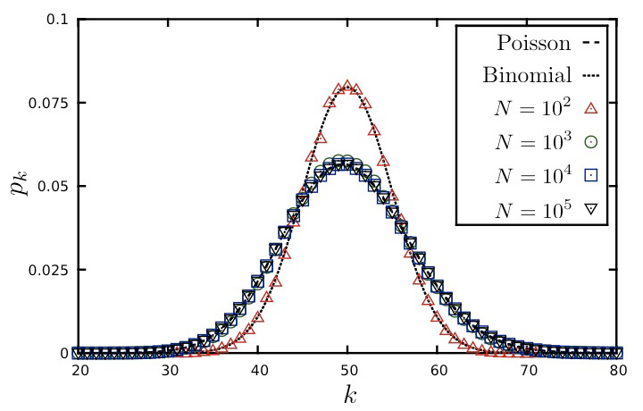
Image 3.4b
Degree distribution is independent of the network size.
The degree distribution of a random network with average degree ‹k› = 50 and sizes N = 102 , 103 , 104. For N = 102 the degree distribution deviates significantly from the Poisson prediction (8), as the condition for the Poisson approximation, N » ‹k›, is not satisfied. Hence for small networks one needs to use the exact binomial form of Eq. (7) (dotted line). For N = 103 and larger networks the degree distribution becomes indistinguishable from the Poisson prediction, (8), shown as a continuous line, illustrating that for large N the degree distribution is independent of the network size. In the figure we averaged over 1,000 independently generated random networks to decrease the noise in the degree distribution.
3.5 REAL NETWORKS DO NO NOT HAVE A POISSON DEGREE DISTRIBUTION
The degree of a node in a random network can vary between 0 and N-1, raising an important question: How big are the differences between the node degrees in a particular realization of a random network? That is, can highly connected nodes, or hubs, coexist with small degree nodes? We address answer these questions by estimating the size of the largest and the smallest node in a random network.
Let us assume that the world’s social network is described by the random network model. This may not be as far fetched hypothesis as it first sounds: there is significant randomness in whom we meet and whom we choose to become acquainted with. Sociologists estimate that a typical person knows about 1,000 individuals on a first name basis, suggesting that ‹k›≃1,000. Using the results obtained so far about random networks, we arrive to a number of surprising conclusions about a random society (see Advanced Topics 3.B):
The most connected individual (the largest degree node) in a random society is expected to have degree kmax = 1,185.
The least connected individual is expected to have degree kmin = 816.
The dispersion of a random network is σk=‹k›1/2 , which for ‹k›=1,000 is σk = 31.62. This means that the number of friends of a typical individual should be mainly in the ‹k› ± σk range, or between 970 and 1,030, a rather narrow range.
In other words, in a random society everyone would have a comparable number of friends. We would lack outliers, or highly popular individuals, and no one would be left behind, having only a few friends. This calculation illustrates that in a large random network the degree of most nodes is in the narrow vicinity of ‹k› (Box 3.4).
This prediction blatantly conflicts with reality. Indeed, there is extensive evidence of individuals who have considerably more than 1,018 acquaintances. For example, US president Franklin Delano Roosevelt’s appointment book had about 22,000 names in it, individuals he met personally [17, 26]. Similarly, a study of the social network behind Facebook has documented numerous individuals with 5,000 Facebook friends, the maximum allowed by the social networking platform [4]. The reason behind these systematic discrepancies can be understood by comparing the degree distribution of real and random networks.
Box 3.4 Why hubs are absent in random network.
To understand why hubs are absent in random networks, we turn to the degree distribution (8). We first realize that the 1/k! term in (8) significantly decreases the chances of observing large degree nodes. Indeed, the Stirling approximation
For degrees k > e ‹k› the term in the parenthesis is smaller than one, hence for large k both k-dependent terms in (9), i.e. 1/√k and (e‹k› /k)k decrease rapidly with increasing k. Overall Eq. (9) predicts that in a random network the chance of observing a hub decreases faster than exponentially.
In Image 3.5 we show the degree distribution of three real networks, together with the corresponding Poisson fits. The figure documents considerable differences between the random network predictions and the real data:
The Poisson form significantly underestimates the number of high degree nodes. For example, according to the random network model the maximum degree for the Internet is expected to be around 20, while the data indicates the existence of nodes with degrees close to 103.
The spread in the degrees of real networks is much wider than expected in a random network. This difference is captured by the dispersion σk(Image 3.4a). For example, if the Internet were to be random, we would expect σk = 2.52, while the measurements indicate σinternet = 14.14, significantly higher than predicted.
These differences are not limited to the networks shown in Image 3.5, but all networks listed in Table 2.1 share this property. Hence the comparison with the real data indicates that the random network model does not capture the degree distribution of real networks. While in a random network most nodes have comparable degrees, forbidding hubs, in real networks we observe a significant number of highly connected nodes and large differences in node degrees. We will resolve these differences in Chapter 4.
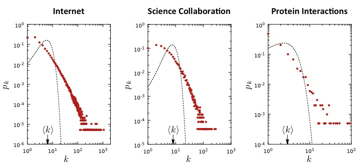
Image 3.5
Degree distribution of real networks.
The degree distribution of the Internet, science collaboration network, and the protein interaction network of yeast (Table 2.1). The dashed line corresponds to the Poisson prediction, obtained by measuring ‹k› for the real network and then plotting Eq. (8). The significant deviation between the data and the Poisson fit indicates that the random network model underestimates the size and the frequency of highly connected nodes, or hubs.
3.6 THE EVOLUTION OF A RANDOM NETWORK
Movie 3.1
Evolution of a random graph.
Changes in the structure of a random graph with increasing p, illustrating the absence of a giant component for small p and its sudden emergence once p exceeds a critical value.
The cocktail party we encountered at the beginning of the chapter captures a dynamical process: starting with N isolated nodes, the links are added gradually through random encounters between the guests. Within the random network model this corresponds to a gradual increase of p, with striking consequences on the network topology (Movie 3.1). To quantify this process, we first inspect how the size NG of the giant component, which is the largest cluster within the network, varies with ‹k›. The two extreme cases are easy to understand:
For p = 0 we have ‹k› = 0, hence we observe only isolated nodes. Therefore NG = 1 and NG / N→0 for large N.
For p = 1 we have ‹k›= N-1, hence the network is a complete graph and all nodes belong to a single cluster. Therefore NG = N and NG / N = 1.
One would expect that the giant component will grow gradually from NG = 1 to NG = N if we increase ‹k› from 0 to N-1. Yet, as Image 3.6a indicates, this is not the case: NG / N remains zero for small ‹k›, indicating the lack of a giant component for a range of ‹k› values. Once ‹k› exceeds a critical value, NG / N increases rapidly, signaling the emergence of a giant component. Erdős and Rényi in their classical 1959 paper predicted that the condition for the emergence of the giant component is
\[\left\langle k \right\rangle = 1. \hspace{20 mm} (10) \]
In other words, we have a giant component if and only if when each node has on average one link (Advanced Topics 3.C).
The fact that at least one link per node is necessary for a giant component is not unexpected. Indeed, for a giant component to exist, each of its nodes must be linked to at least one other node. It is somewhat counterintuitive, however that one link is sufficient for its emergence.
If we wish to express Eq. (10) in terms of p, using Eq. (3) we obtain
indicating that the larger a network, the smaller p is sufficient for the giant component.
The emergence of the giant component is only one of the important transitions displayed by a random network. Changes in ‹k› allow us to distinguish four topologically distinct regimes (Image 3.6), each with its unique characteristics:
(a) Subcritical regime: 0 < ‹k› < 1, (p < 1/N ).
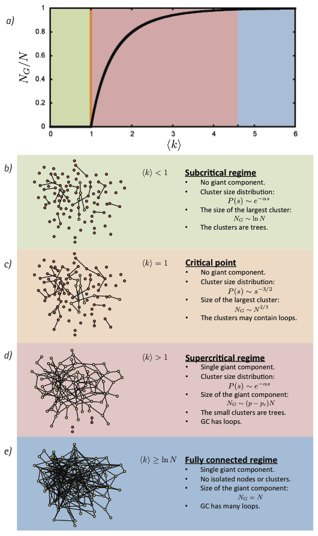
Image 3.6
Evolution of a random network.
(a) The relative size of the giant component in function of the average degree ‹k› in the Erdős-Rényi model.
(b)-(e) The main network characteristics in the four regimes that charac- terize a random network.
For ‹k› = 0 the network consists of N isolated nodes. Increasing ‹k› is equivalent with adding N‹k› = pN(N-1)/2 links to the network. Yet, given the small number of links in the network in this regime, these links will mainly form clusters of size two (Image 3.6b). Upon increasing ‹k› further, some of the new links will join these pairs, forming tiny clusters. While we can designate at any moment the largest such cluster to be the giant component, in this regime the relative size of the largest cluster, NG / N, remains zero. The reason is that for ‹k› < 1 the largest cluster is a tree with size N ~ lnN. Therefore NG/ N ≃ lnN / N→0 in the N→∞ limit, indicating that the largest component is tiny compared to the size of the network.
In summary, in the subcritical regime the network consists of numerous tiny components, whose size follows an exponential distribution. Hence these components have comparable sizes, lacking a clear winner that we could designate as a giant component (Advanced Topics 3.D).
(b) Critical Point: ‹k› = 1, (p = 1/N ).
The critical point separates the regime where there is not yet a giant component (‹k› < 1) from the regime where there is one (‹k› > 1). While it signals the emergence of the giant component, the relative size of the largest component in this point is still zero (Image 3.6c). Indeed, the calculations indicate that the size of the largest component is NG ~ N2/3, so its relative size decreases as NG / N~ N-1/3, indicating that NG is still tiny compared to the network’s size.
In absolute terms there is a significant increase in the size of the largest component at ‹k› = 1. For example, for a random network of N = 7 ×109 nodes, the size of the globe’s social network, for ‹k› < 1 the largest cluster is of the order of NG ≃ lnN = ln (7 ×109)≃ 22.7. In contrast at ‹k› = 1 we expect N ~ N2/3 = (7 ×109)2/3 ≃ 3 ×106, a jump of about five orders of magnitude. Yet, both in the subcritical regime (‹k› < 1) and at the critical point (‹k› = 1) the largest component contains a vanishing fraction of the total number of nodes in the network.
Therefore most nodes are located in numerous small components, whose size distribution follows Eq. (36), a power law form indicating that components of rather different sizes coexist. These numerous small components are mainly trees, while the giant component may contain loops. Note that many properties of the network at the crit- ical point resemble the properties of a physical system undergoing a phase transition (Advanced Topics 3.F).
(c) Supercritical regime: ‹k› > 1, (p > 1/N ).
This regime has the most relevance to real systems, as for the first time we have a giant component that looks like a network. In the vicinity of the critical point the size of the giant component varies as
where pc is given by Eq.(11). In other words, the giant component contains a finite fraction of all nodes in the network. The further we move from the critical point, a larger fraction of nodes will belong to it. Note that Eq. (12) is valid only in the vicinity of ‹k› = 1, and for large ‹k› the dependence between NG and ‹k› is nonlinear (Image 3.6d).
In the supercritical regime there are still numerous isolated components that coexist with the giant component, their size distribution being given by Eq. (35). These small components are trees, while the giant component contains numerous loops and cycles. The supercritical regime lasts until all nodes are absorbed by the giant component.
(d) Connected regime: ‹k› ≥ lnN, (p ≥ (lnN)/N ).
For sufficiently large p the giant component will absorb all nodes and components, hence NG≃N. In the absence of isolated nodes the network becomes connected. The average degree at which this happens depends on N as (Advanced Topic 3.E)
\[\langle k\rangle \sim\ln N. \hspace{20 mm} (14) \]
Note that when we enter the connected regime the network is still relatively sparse, as lnN / N → 0 for large N. The network turns into a complete graph only at ‹k› = N - 1.
Box 3.5 Network evolution in graph theory.
In the random graph literature it is often assumed that the connection probability p(N) scales as Nz, where z is a tunable parameter between -∞ and 0. The greatest discovery of Erdős and Rényi was that as we vary z, key properties of random graphs appear quite suddenly. To be precise, a graph has a given property Q if the probability of having Q approaches 1 as N→∞. That is, for a given probability either almost every graph has the property Q or, almost no graph has it. For example, for z less than -3/2 almost all graphs contain only isolated nodes and edges.
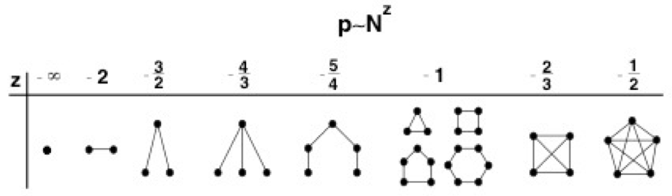
Image 3.7
Evolution of a random network.
The threshold probabilities at which different subgraphs appear in a random graph, as defined by exponent z in the p(N) ~ Nz relationship. For z < -3/2 the graph consists of isolated nodes and edges. When z passes -3/2 trees of order 3 appear, while at z = -4/3 trees of order 4 appear. At z = 1 trees of all orders are present, together with cycles of all orders. Complete subgraphs of order 4 appear at z =-2/3, and as z increases further, complete subgraphs of larger and larger order emerge.
In summary, the emergence of a network within the random network model is not a smooth process: the isolated nodes and tiny components observed for small ‹k› organize themselves into a giant component rather suddenly, through a process called phase transition (Advanced Topics 3.F). Along the way we encounter four topologi- cally distinct regimes (Image 3.6). The discussion offered above follows an empirical perspective, fruitful if we wish to compare the observed networks to real systems. A different prospective, leading to it own rich behavior, is discussed in the mathematical literature (Box 3.5).
3.7 REAL NETWORKS ARE SUPERCRITICAL
Two predictions of random network theory are of special importance for real networks:
Once the average degree exceeds ‹k› = 1, a giant component emerges that contains a finite fraction of all nodes. Hence only for ‹k› > 1 the nodes organize themselves into a recognizable network.
For ‹k› > lnN all components are absorbed by the giant component, resulting in a single connected network.
But, do real networks satisfy the criteria for the existence of a giant component, i.e. ‹k› › 1? And will this giant component contain all nodes, i.e. is ‹k› › lnN , or do we expect some nodes and components to remain disconnected? These questions can be answered by comparing the measured ‹k› with the theoretical thresholds uncovered above.
NETWORK
NODES
LINKS
‹K›
Ln N
Internet
192,244
609,066
6.34
12.17
Power Grid
4,941
6,594
2.67
8.51
Science Collaboration
23,133
186,936
8.08
10.04
Actor Network
212,250
3,054,278
28.78
12.27
Yeast Protein Interactions
2,018
2,930
2.90
7.61
Table 3.1
Are real networks connected?
The number of nodes N and links L for several undirected networks, together with ‹k› and lnN. A giant component is expected for ‹k› > 1 and all nodes should join the giant component for ‹k› ≥ lnN. While for all networks ‹k› > 1, for most ‹k› is under the lnN threshold.
The measurements indicate that real networks extravagantly exceed the ‹k› = 1 threshold. Indeed, sociologists estimate that an average person has around 1,000 acquaintances; a typical neuron is connected to dozens of other neurons, some to thousands; in our cells, each molecule takes part in several chemical reactions, some, like water, in hundreds. This conclusion is supported by Table 3.1, listing the average degree of several undirected networks, in each case finding ‹k› > 1. Hence the average degree of real networks is well beyond the ‹k› = 1 threshold, implying that they all have a giant component.
Let us now inspect if we have single component (if ‹k› > lnN), or we expect the network to be fragmented into multiple components (if ‹k› < lnN ). For social networks this would mean that ‹k› ≥ ln(7 ×109) ≃ 22.7. That is, if the average individual has more than two dozens acquain- tances, then a random society would have a single component, leaving no node disconnected. With ‹k› ≃ 1,000 this is clearly satisfied. Yet, according to Table 3.1 most real networks do not satisfy this criteria, indicating that they should consist of several disconnected components. This is a disconcerting prediction for the Internet, as it suggests that we should have routers that, being disconnected from the giant component, are unable to communicate with other routers. This prediction is at odd with reality, as these routers would be of little utility.
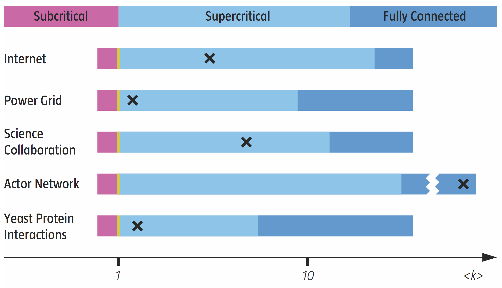
Image 3.8
Most real networks are supercritical.
The four regimes predicted by random network theory, marking with a cross the location of several real networks of Table 3.1. The diagram indicates that most networks are in the supercritical regime, hence they are expected to be broken into numerous isolated components. Only the actor network is in the connected regime, meaning that all nodes are expected to be part of a single giant component. Note that while the boundary between the subcritical and the supercritical regime is always at ‹k› = 1, the boundary between the supercritical and the connected regimes is at lnN, hence varies from system to system.
Taken together, we find that most real networks are in the supercritical regime (Image 3.8). This means that these networks have a giant component, but it coexists with many disconnected components and nodes. This is true, however, only if real networks are accurately described by the Erdős-Rényi model, i.e. if real networks are random. In the coming chapters, as we learn more about the structure of real networks, we will understand why real networks can stay connected despite failing the k > lnN criteria.
3.8 SMALL WORLD PROPERTY
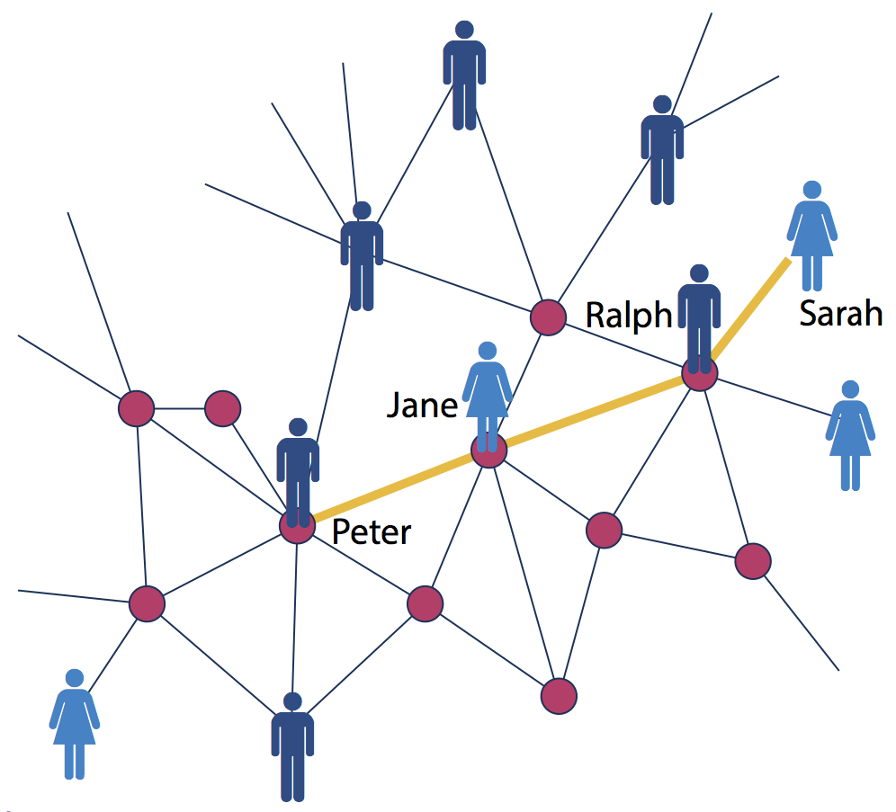
Image 3.9
Six degrees of separation.
According to six degrees of separation any two individuals, anywhere in the world, can be connected through a chain of six or fewer acquaintances. This means that while Sarah does not know Peter, she knows Ralph, who knows Jane and who in turn knows Peter. Hence Sarah is three degrees from Peter. In the language of network science six degrees, also called the small world property, states that the distance between any two nodes in a network is unexpectedly small.
Small world phenomena, also known as six degrees of separation, has long fascinated the general public. It states that if you choose any two individuals anywhere on earth, you will find a path of at most six acquaintances between them (Image 3.9). The fact that individuals who live in the same city are only a few handshakes from each other is by no means surprising. The small world concept goes further, however, stating that even individuals who are on the opposite side of the globe are six or fewer hand-shakes from us.
In the language of network science small world phenomena implies that the distance between two randomly chosen nodes in a network is surprisingly short. This statement raises two questions:
What does short (or small) mean, i.e. short compared to what?
How do we explain the existence of these short distances?
Both of these questions are answered by a simple calculation within the context of random networks. Consider a random network with average degree ‹k›. A node in this network has on average:
‹k› nodes at distance two (d=1). ‹k›2 nodes at distance two (d=2). ‹k›3 nodes at distance three (d=3).
... ‹k›d nodes at distance d.
6
For example, if ‹k› ≃ 1,000, we expect 106 individuals at distance two and about a billion individuals, i.e. almost the whole earth’s population, at distance three from us.
To be precise, the expected number of nodes up to distance d from our starting node is
Yet, N(d) must not exceed the total number of nodes, N, in the network. Therefore the distances cannot take up arbitrary values. We can identify a maximum distance dmax or the network’s diameter at which N(d) reaches N. By setting
\[N({d_{max}}) \simeq N,\hspace{20 mm} (16) \]
and assuming that ‹k› » 1, we can neglect the (-1) term in both the nominator and denominator of Eq. (15), obtain- ing
which represents the quantitative formulation of the small world phenomena. The key, however is its interpretation:
As derived, Eq. (18) predicts the scaling of the network diameter, dmax . Yet, for most networks Eq. (18) offers a better approximation to the average distance between two randomly chosen nodes, ‹d›, than to dmax (Table 3.2). This is because dmax is often dominated by a few extreme paths, while ‹d› is averaged over all node pairs, a process that diminishes the fluctuations. Hence typically the small world property is defined by \[\langle d\rangle \propto \frac{{\log N}}{{\log \langle k\rangle }},\hspace{20 mm} (19) \] describing the dependence on N and ‹k› of the average distance in a network.
In general log N « N, hence the dependence of ‹d› on logN implies that the distances in a random network are orders of magnitude smaller than the size of the network. Consequently small world phenomena implies that the average path length or the diameter depends logarithmically on the system size. Hence, “small” means that ‹d› is proportional to log N, rather than N or some power of N (Image 3.10).
The 1 / log ‹k› term implies that the denser the network, the smaller is the distance between the nodes.
In real networks there are systematic corrections to Eq. (18), rooted in the fact that the number of nodes at distance d > ‹d› drops rapidly (Advanced Topics 3.F).
NETWORK NAME
N
L
‹k›
‹d›
dmax
(LogN)/(log‹k›)
Internet
192244
609066
6.34
6.98
26
6.59
WWW
325729
1497134
4.60
11.27
93
8.32
Power Grid
4941
6594
2.67
18.99
46
8.66
Mobile-Phone Calls
36595
91826
2.51
11.72
39
11.42
Email
57194
103731
1.81
5.88
18
18.4
Science Collaboration
23133
186936
8.08
5.35
15
4.81
Actor Network
212250
3054278
28.78
-
-
-
Citation Network
449673
4707958
10.47
11.21
42
5.55
E. coli Metabolism
1039
5802
5.84
2.98
8
4.04
Yeast Protein Interactions
2018
2930
2.90
5.61
14
7.14
Table 3.4
Six degrees of separation.
The average distance ‹d› and the maximum distance dmax of the ten networks explored in this book. The last column provides ‹d› predicted by Eq. (19), indicating that it offers a reasonable approximation to ‹d›. Yet, the agreement is not perfect - we will see in the next chapter that for many real networks Eq. (19) needs to be adjusted. For directed networks we list the average out-degree ‹kout› and the path lengths are measured only along the direction of the links.
Let us illustrate the implications of Eq. (19) for social net- works. Using N≃ 7 ×109 and ‹k›≃103, we obtain
Therefore, all individuals on Earth should be within three to four handshakes of each other, about a half of “six degrees”. The estimate (20) is probably closer to the real value given by Eq. (7) than the frequently quoted six degrees (Image 3.11).
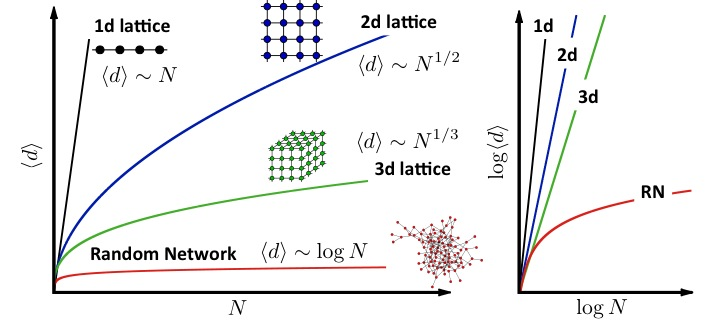
Image 3.10
Why are small worlds surprising?
Much of our intuition about distance is based on our experience with reg- ular lattices, which do not display the small world phenomenon. Indeed,
For a one-dimensional lattice (a line of length N) the diameter and the average path length scale linearly with N: dmax~‹d› ~N.
For a square lattice dmax~‹d› ~ N1/2.
For a cubic lattice dmax~‹d› ~ N1/3.
In general, for a d-dimensional lattice we have dmax ~ ‹d› ~ N1/d.
Such polynomial dependence predicts a much faster increase with N than Eq. (19), indicating that in regular lattices the path lengths are significantly longer than in a random network. The figure shows the predicted N-dependence of ‹d› for regular and random networks on a linear (left) and on a log-log (right) scale. If the social network would form a regular 2d lattice, where each individual knows only its nearest neighbors, the average distance between two individuals would be roughly (7 ×10 9)1/2 = 83,666. Even if we correct for the fact that a person has about 1,000 acquaintances, not four, the average separation will be orders of magnitude larger than predicted by Eq. (19).
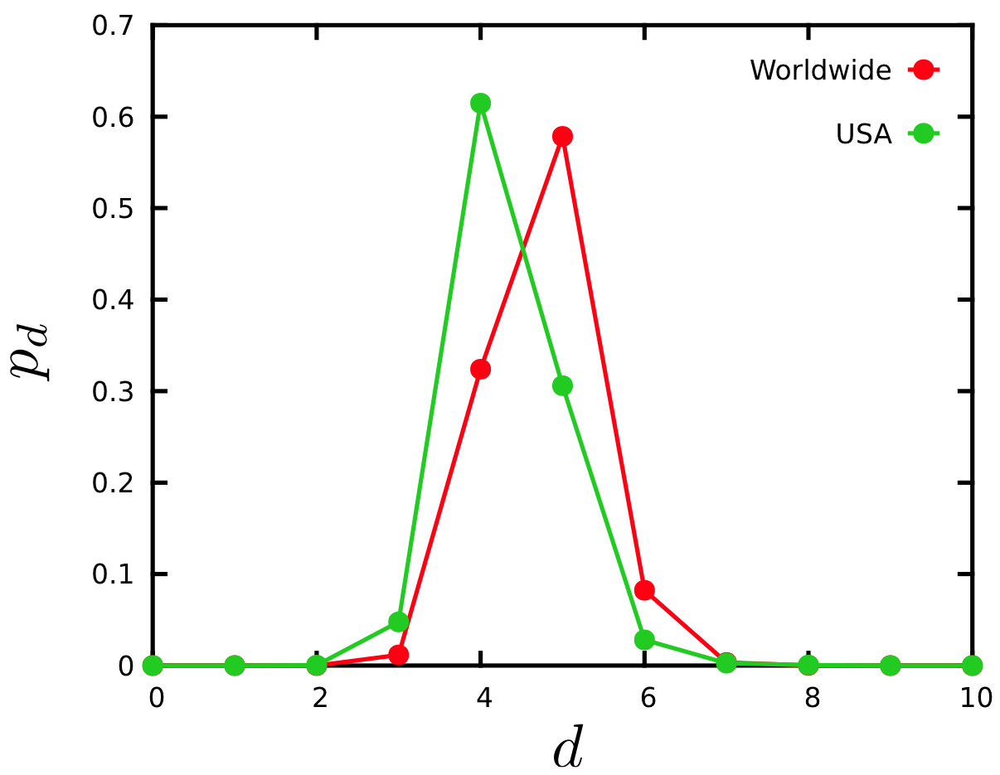
Image 3.11
Six degrees? Facebook finds only four.
Milgram’s experiment could not detect the true distance between his study’s participants, as he lacked an accurate map of the full social network. Today Facebook has the most extensive social network map ever assembled. Using Facebook’s social graph of May 2011, consisting of 721 million active users and 68 billion symmetric friendship links, the average distance between the users was 4.74. The figure shows the distance distribution, pd , for all pairs of Facebook users worldwide (full dataset) and within the US only. Therefore, instead of ‘six degrees’ researchers detected only ‘four degrees of separation’ [4], closer to the prediction of Eq. (20) than to Milgram’s six degrees [23]. Using Facebook’s N and L Eq. (19) predicts the average degree to be approximately 3.90, not far from the reported four degrees.
While discovered in the context of social systems, the small world property applies beyond social networks. In Table 3.2 we compare the prediction of Eq. (19) with the average path length ‹d› for several real networks, finding that despite the diversity of these systems and the significant differences between them in terms of N and ‹k›, Eq. (19) offers a reasonable approximation to the empirically observed ‹d›.
The small world property has not only ignited the public’s imagination, but plays an important role in network science as well. It affects most network characteristics, from the spread of ideas in social networks to search on networks. The small world phenomena can be reasonably well understood in the context of the random network model: it is rooted in the fact that the number of nodes at distance d from a node increases exponentially with d. While in the coming chapters we will see that in real networks we encounter systematic deviations from Eq. (19), forcing us to replace it with more accurate predictions, the intuition offered by the random network model on the origin of the phenomenon remains valid.
Box 3.6 A BRIEF HISTORY OF SIX DEGREES
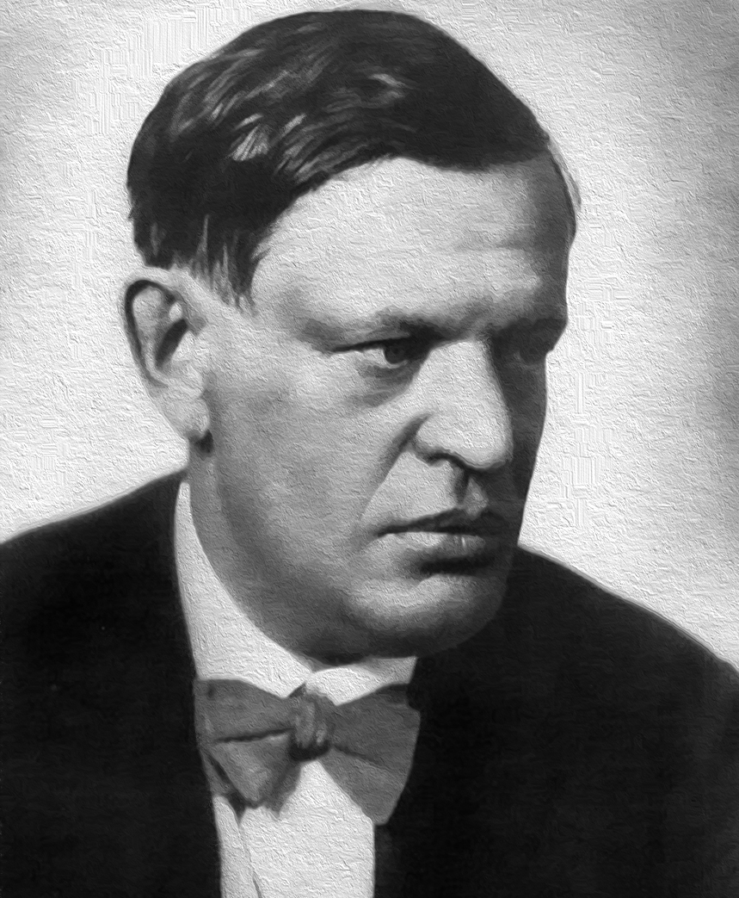
Image 3.12
Frigyes Karinthy (1887-1938)
Hungarian writer, journalist and playwright, the first to describe the small world property. He remains one of the most popular writers in Hungary. English translation of Chains, the 1929 short story describing the small world phenomena, is available in [25].
The first description of small world phenomena goes back to a 1929 story collection entitled Minden másképpen van (Everything is Different) by the Hungarian writer Frigyes Karinthy [21]. In Láncszemek (Chains), a short story in the volume, Karinthy suggests that one could name any person among earth’s one and a half billion inhabitants (estimated population in 1929) and through at most five acquaintances, one of which he knew personally, he could link to him. To demonstrate his thesis Karinthy links a Nobel Prize winner to himself, noting that the Nobelist must know King Gustav, the Swedish monarch who hands out the Nobel Prize, who in turn is a consummate tennis player and occasionally plays with a tennis champion who is one of Karinthy’s good friends. Remarking that finding a chain of acquaintances to celebrities, like a Nobelist, is easy, he next links a worker in Ford’s factory to himself:
“The worker knows the manager in the shop, who knows Ford; Ford is on friendly terms with the general director of Hearst Publications, who last year became good friends with Árpád Pásztor, someone I not only know, but to the best of my knowledge a good friend of mine.”
Image 3.13
Stanley Milgram (1933-1984)
American social psychologist known for his experiments on obedience and authority. He designed and carried out the small world experiment in 1967 as part of his Harvard dissertation.
The first experimental study of small world phenomena took place four decades after Karinthy, in 1967, when Stanley Milgram turned the idea into an experiment probing the structure of social networks [23]. Milgram chose a stock broker in Boston and a divinity student in Sharon, Massachusetts as “targets”. Randomly selected residents of Wichita, Kansas and Omaha, Nebraska received
a letter containing a short summary of the study’s purpose, a photograph, the name, address and information about the target person. They were asked to forward the letter to a friend, relative or acquaintance, who is more likely to know the target person. Milgram wrote in 1969: “I asked a person of intelligence how many steps he thought it would take, and he said that it would require 100 intermediate persons, or more, to move from Nebraska to Sharon.” Yet, within a few days the first letter arrived, passing through only two links. Eventually 42 of the 160 letters made
it back, some requiring close to a dozen intermediates. These completed chains allowed Milgram to determine the number of individuals required to get the letter to the target. He found that the median number of intermediates was 5.5, a relatively small number and remarkably close to Karinthy’s 1929 insight.
Image 3.14
Six Degrees of Separation.
Cover of John Guareís Six Degrees of Separation play, that helped turn six degrees into a catch phase of popular culture.
The phrase “six degrees of separation” was introduced in 1991 by the playwright John Guare, who used it as the title of his Broadway play, later turned into a movie. The play’s lead character, Ousa, musing about the world’s interconnectedness, tells her daughter: “Everybody on this planet is separated by only six other people. Six degrees of separation. Between us and everybody else on this planet. The president of the United States. A gondolier in Venice. It’s not just the big names. It’s anyone. A native in a rain forest. A Tierra del Fuegan. An Eskimo. I am bound to everyone on this planet by a trail of six people. It’s a profound thought. How every person is a new door, opening up into other worlds.”
Milgram’s study was confined to the United States, linking individuals in Wichita and Omaha to Boston. Guare, however, with the sweep of a writer’s imagination, generalized six degrees to the whole planet, bringing it closer in spirit to Karinthy’s 1929 description. As more people watch movies than read sociology papers, Guare’s version prevailed in popular thought.
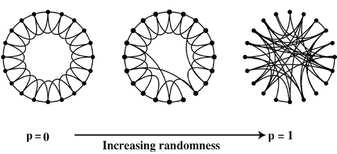
Image 3.15
Watts-Strogatz model.
The model starts from a ring of nodes, each node connected to their immediate and next neighbors, a configuration in which each node has clustering coefficient C = 3/4 (left, p = 0). With probability p each link is rewired to a randomly chosen node.
For small p the network maintains a high average clustering coefficient but the random long-range links drastically decrease the distances between the nodes, inducing the small world effect (middle). For large p (right, p = 1) the network turns into a random network. (After [30]).
A new wave of interest in small worlds emerged following
the 1998 study of Duncan Watts and Steven Strogatz, applied mathematicians working at Cornell [30]. They analyzed three real systems, the actor network of Hollywood, the neural network
of the worm C. elegans, and the North American power grid, in each case finding that the average distance between the nodes is comparable to the random network prediction Eq. (19). Hence they found that the small world property applies to networks appearing in natural and technological systems as well. Watts and Strogatz also noted that these networks have a much higher clustering coefficient than expected for a random network, prompting them to propose a model to account for the coexistence of small path lengths and large clustering (Image 3.15). The model’s properties are discussed in detail in the chapter devoted to social networks.
3.9 CLUSTERING COEFFICIENT
The local clustering coefficient Ci captures the density of links in node i’s immediate neighborhood: C = 0 means that there are no links between i’s neighbors; C = 1 implies that each of the i’s neighbors link to each other (Sect. 2.10). To calculate Ci for a node in a random network we need to estimate the expected number of links Li between the node’s ki neighbors. In a random network the probability that two of i’s neighbors link to each other is p. As there are ki(ki - 1)/2 possible links between the ki neighbors of node i, the expected value of Li is
Clustering in real networks.(a) Comparison between the average clustering coefficient of real networks and the prediction Eq. (21) for random networks. Each circle corresponds to a network from Table 3.2. Directed network were made undirect- ed to calculate C. The dashed line corresponds to Eq. (21), predicting that for random networks the average clustering coefficient should decrease as N-1. In contrast, for real networks ‹C› has only a weak dependence on N-1.
(b)-(d) The dependence of the local clustering coefficient, C(k), on the node’s degree for (b) the Internet, (c) science collaboration network and (d) protein interaction network. C(k) is measured by averaging the local clustering coefficient of all nodes with the same degree k. The dashed line corresponds to the prediction of Eq. (21) of the random network model, for which C(k) is independent of k. In many real networks, the clustering coefficient decreases with k.
Equation (21) makes two predictions:
For fixed ‹k›, the larger the network, the smaller is a node’s clustering coefficient. Consequently the network’s average clustering coefficient ‹C› is expected to decrease as 1 / N.
The local clustering coefficient of a node is independent of the node’s degree.
To test the validity of Eq. (21) we plot ‹C›/‹k› in function of N for several undirected networks (Image 3.16a). We find that ‹C›/‹k› does not decrease as N-1, but it is largely independent of N, in violation of Eq. (21) . In Image 3.16b-d we also show the dependency of C on the node’s degree ki for three real networks, finding that C(k) systematically decreases with the degree, again in violation of Eq. (21) .
Taken together, we find that the random network model does not capture the local clustering of real networks. Instead real networks have a much higher clustering coefficient than expected for a random network of similar N and L, and high-degree nodes tend to have a smaller clustering coefficient than low-degree nodes.
3.10 REAL NETWORKS ARE NOT RANDOM
For about four decades following its introduction in 1959 the random network model has dominated mathematical approaches to complex networks. The model suggests that if a network is not as regular as a square lattice, we should describe it as random. With that it equated complexity with randomness. We must therefore ask:
Do we really believe that real networks are random?
The answer is clearly no. The interactions between our proteins are governed by the strict laws of biochemistry so for the cell to function its chemical architecture can not be random. Similarly, in a random society an American student would be more likely to have among his friends Chinese factory workers than one of her classmates. In reality we suspect the existence of a deep order behind most complex systems. That order must be reflected in the structure of the network that describes their architecture, resulting in systematic deviations from a pure random configura- tion.
The degree to which random networks describe (or fail to describe) real systems must not be decided by epistemological arguments, but by a systematic quantitative comparison. This is possible because random network theory makes a number of quantitative predictions that can be tested on real networks:
Degree distribution: The degrees of a random network follow a binomial distribution, well approximated by a Poisson distribution in the k « N limit. Yet, as shown in Image 3.5, the Poisson distribution fails to capture the degree distribution of real networks. Instead in real systems we have more highly connected nodes than the random network model could account for.
Connectedness: Random network theory predicts that for ‹k› > 1 we should observe a giant component, a condition satisfied by all networks we examined. Most networks do not satisfy the ‹k› > ln N condition, which implies that these networks should be broken into isolated clusters (Table 3.1). Some networks are indeed fragmented, most are not.
Average path length: Random network theory predicts that the average path length scales as ‹d› ~ logN / log‹k›, a prediction that captures the order of magnitude of the path lengths. Hence the random network model can account for the fundamental features of small world phenomena.
Clustering coefficient: In a random network the local clustering coefficient is independent of the node’s degree and ‹C› depends on the system size as 1 / N. In contrast, measurements indicate that for real networks C decreases with the node degrees and is largely independent of the system size (Image 3.16).
Taken together, it appears that the small world phenomena is the only property reasonably explained by the random network model. All other network characteristics, from the degree distribution to the clustering coefficient, are significantly different in real and random networks. In fact, the more we learn about real networks, the more we will arrive at the startling conclusion that we do not know of any real network that is accurately described by the random network model.
This conclusion begs a legitimate question: If real networks are not random, why did we devote a full chapter to the random network model? The answer is simple: the model serves as a fundamental reference as we try to understand the properties of real networks. Each time we observe some network property we will have to ask if it could have emerged by chance. For this we turn to the random network model as a guide: if the property is present in the model, it means that randomness can account for it. If the property is absent in random networks, it may represents some signature of order, requiring a deeper explanation. So, the random network model may be the wrong model for most real systems, yet, it remains quite relevant for network science (Box 3.8).
Box 3.7 Random networks and network science.
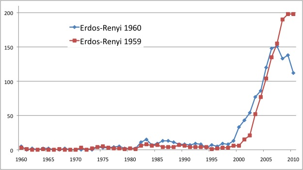
Image 3.17
Network science and random networks.
While today we perceive the Erdős-Rényi model as the cornerstone of network theory, the model was hardly known outside a small segment of mathematics. This is illustrated by the yearly citations of the first two papers by Erdős and Rényi, published in 1959 and 1960. For four decades after their publication the papers gathered less than 10 citations per year. The number of citations exploded after the first papers on scale-free networks [2, 3, 20] have turned Erdős and Rényi’s work into the reference model of network theory.
The lack of agreement between random and real networks raises an important question: how could a theory survive so long given its poor agreement with reality? The answer is simple: random network theory was never meant to serve as a model of real systems. True Erdős and Rényi did write in their first paper [9] that “This may be interesting not only from a purely mathematical point of view. In fact, the evolution of graphs may be considered as a rather simplified model of the evolution of certain communication nets (railways, road or electric network systems, etc.) of a country or some unit.” Yet, this is the only mention of the potential practical value of their approach. The subsequent development of random graphs was driven by inherent mathematical challenges.
It is tempting to follow Thomas Kuhn and view network science
as a paradigm change from random graphs to a theory of real networks [22]. In reality, there was no network paradigm before the end of 1990s. This period is characterized by a lack of interest in the problem, without systematic attempts to compare the properties of real networks with graph theoretical models. The work of Erdős and Rényi has gained prominence outside mathematics only after the emergence of network science (see Image 3.17).
Network theory does not lessen the contributions of Erdős and Rényi, but demonstrates the unintended importance of their work. When we point out the disrepacies between the predictions of the random network model and real networks, we do so only to offer a proper ground on which we can understand the properties of real systems.
3.11 SUMMARY:
THE FIRST LAW OF NETWORKS
Network science has distilled a small number of fundamental organizing principles that govern the structure and evolution of real networks. We call these network laws as just like the laws of physics, they encode generic principles obeyed by many real networks. A network property quantifies as a law if
it has a unique quantitative, testable and falsifiable formulation;
it is obeyed by a large number of real networks;
it does not emergence by chance, hence it cannot be explained within the context of the random network model.
The results of this chapter allow us to formulate the fist of these laws:
THE FIRST LAW: SMALL WORLD PROPERTY In complex networks there are short distances between any pair of nodes.
Evidence for the first law is provided in Sect. 3.8. To recap in the context of the criteria A-C:
Equation (19) offers the quantitative formulation of the First Law, predicting that the average distance between two randomly chosen nodes scales as a logarithm of the system size. Hence node-to-node distances are small compared to the network size.
Table 3.2 offers evidence that most real networks obey the first law.
As the small world property is present in random networks, the First Law apparently fails criterion C. Yet, we will see in the next chapter that in real networks distances are different from those expected in random networks, forcing us to modify Eq. (19).
Box 3.8 At a glance: Random networks.
Definition: N nodes, where each node pair is connected with probability p.
Average degree: \[\left\langle k \right\rangle \sim p\left( {N - 1} \right)\]
Average number of links: \[\left\langle L \right\rangle \sim \frac{{p\left( {N - 1} \right)}}{2}\]
Degree distribution: \[{p_k}{\rm{ }} = \left( \begin{array}{c}
N - 1\\
k
\end{array} \right){p^k}{(1 - p)^{N - 1 - k}}.\]
For sparse networks (k « N), Pk has the Poisson form \[{p_k} = {e^{ - \left\langle k \right\rangle }}\frac{{{{\left\langle k \right\rangle }^k}}}{{k!}}.\]
Giant component (NG): ‹k› < 1: no giant component (NG~ lnN) 1 < ‹k› < lnN: one giant component and disconnected clusters
\[{N_G} \sim {N^{\frac{2}{3}}}\]
‹k› > lnN: all nodes join the giant component
\[{N_G} \sim \left( {p - {p_i}} \right)N\]
Average distance: \[\langle d\rangle \propto \frac{{\log N}}{{\log \langle k\rangle }},\]
Clustering coefficient: \[C = \frac{{\left\langle k \right\rangle }}{N}.\]
ADVANCED TOPICS 3.A:
DERIVING THE POISSON DEGREE DISTRIBUTION
We start from the exact binomial distribution (7)
\[{p_k} = \left( \begin{array}{c}
N - 1\\
k
\end{array} \right){p^k}{(1 - p)^{N - 1 - k}} \hspace{20 mm} (22) \]
that characterizes a random graph, and we rewrite the first term on the r.h.s. as
Approximating the minimum and the maximum degree.
The maximum degree kmax is chosen so that there is at most one node whose degree is higher than kmax . This is often called the natural upper cutoff of a degree distribution. To calculate it, we need to set kmax such that the area under the degree distribution pk for k ≥kmax is exactly equal kmax to 1/N, hence this area multiplied by N, capturing the total number of nodes expected in the regime, is exactly one. We follow a similar argument to determine kmin, or the expected smallest degree.
To determine the expected degree of the largest node in a random network, called the network’s upper cutoff, we de- fine the degree kmax such that in a network of N nodes we have at most one node with degree higher than kmax . Math- ematically this means that the area behind the Poisson dis- tribution pk for k ≥ kmax should be approximately one (Im- age 3.18). Since the area is given by 1- P(kmax), where P(k) is the cumulative degree distribution of pk, the network’s largest node satisfies:
where in the last term we approximate the sum with its largest (leading) term.
For N = 109, and ‹k› = 1,000 corresponding to roughly the size and average degree of the globe’s social network, we obtain kmax = 1,185, indicating that a random network lacks extremely popular individuals, or hubs.
We can use a similar argument to calculate the degree of the smallest node kmin , or the natural smallest cutoff. Indeed, by requiring that there should be at most one node with degree smaller than kmin we can write
\[NP({k_{min}}) \approx 1.\hspace{20 mm} (28) \]
If P(0)>1 the equation has no solution and kmin =0. For the ER network we have
[17] Freeman, L. C. & Thompson, C. R. (1989). Estimating Acquaintanceship. Volume, pg. 147-158, in The Small World, Edited by Manfred Kochen (Ablex, Norwood, NJ)
[18] Gilbert, E. N. (1959). Random graphs. The Annals of Mathematical Statistics, 30:1141-1144.
[21] Frigyes K. “Láncszemek,” in Minden másképpen van. (Budapest: Atheneum Irodai es Nyomdai R.-T. Kiadása, 1929), 85–90. English translation is avail- able in (Newman, Barabási, and Watts, 2006).